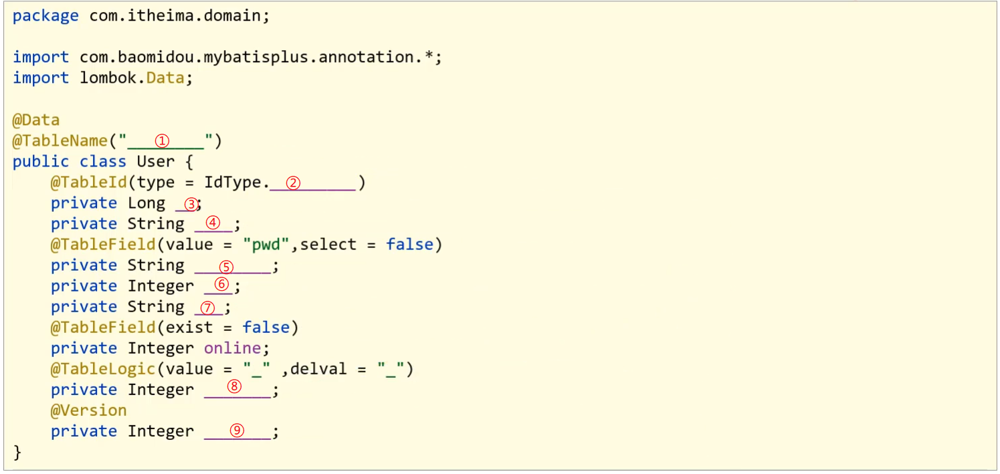

# MyBatisPlus 入门案例与简介
其他的笔记都是先介绍概念，然后再写入门案例。而对于 MyBatisPlus 的学习，顺序做了调整，主要的原因 MyBatisPlus 主要是对 MyBatis 的简化，所有先体会下它简化在哪，然后再学习它是什么，以及它帮我们都做哪些事
# 入门案例
MybatisPlus (简称 MP) 是基于 MyBatis 框架基础上开发的增强型工具，旨在简化开发、提供效率。
开发方式
- 基于 MyBatis 使用 MyBatisPlus
- 基于 Spring 使用 MyBatisPlus
- 基于 SpringBoot 使用 MyBatisPlus
上一篇文章复习了 SpringBoot，它能快速构建 Spring 开发环境用以整合其他技术，使用起来是非常简单，对于 MP 的学习，也基于 SpringBoot 来构建学习
学习之前，简单过下 SpringBoot 整合 Mybatis 的开发过程:
- 创建 SpringBoot 工程
- 勾选配置使用的技术，能够实现自动添加起步依赖包
- 设置 dataSource 相关属性 (JDBC 参数)
- 定义数据层接口映射配置
可以参考着上面的这个实现步骤把 SpringBoot 整合 MyBatisPlus 来快速实现下，具体的实现步骤为:
步骤 1: 创建数据库及表
create database if not exists mybatisplus_db character set utf8; | |
use mybatisplus_db; | |
CREATE TABLE user ( | |
id bigint(20) primary key auto_increment, | |
name varchar(32) not null, | |
password varchar(32) not null, | |
age int(3) not null , | |
tel varchar(32) not null | |
); | |
insert into user values(1,'Tom','tom',3,'18866668888'); | |
insert into user values(2,'Jerry','jerry',4,'16688886666'); | |
insert into user values(3,'Jock','123456',41,'18812345678'); | |
insert into user values(4,'传智播客','itcast',15,'4006184000'); |
步骤 2: 创建 SpringBoot 工程
只需要勾选 MySQL，不用勾选 MyBatis 了
步骤 3:pom.xml 补全依赖
导入坐标
<dependency> | |
<groupId>com.baomidou</groupId> | |
<artifactId>mybatis-plus-boot-starter</artifactId> | |
<version>3.4.1</version> | |
</dependency> | |
<dependency> | |
<groupId>com.alibaba</groupId> | |
<artifactId>druid</artifactId> | |
<version>1.1.16</version> | |
</dependency> |
步骤 4: 添加 MP 的相关配置信息
resources 默认生成的是 properties 配置文件，可以将其替换成 yml 文件，并在文件中配置数据库连接的相关信息：
spring: | |
datasource: | |
type: com.alibaba.druid.pool.DruidDataSource | |
driver-class-name: com.mysql.cj.jdbc.Driver | |
url: jdbc:mysql://localhost:3306/mybatisplus_db?serverTimezone=UTC | |
username: root | |
password: 123456 | |
## mybatis 的日志信息 | |
mybatis-plus: | |
configuration: | |
log-impl: org.apache.ibatis.logging.stdout.StdOutImpl |
步骤 5: 根据数据库表创建实体类
注意 id 是 Long 类型
public class User { | |
private Long id; | |
private String name; | |
private String password; | |
private Integer age; | |
private String tel; | |
//setter...getter...toString 方法略 | |
} |
步骤 7: 创建 Dao 接口
重点在这个 @BaseMapper 注解，直接不用写增删改查和相应的 SQL 了
@Mapper | |
public interface UserDao extends BaseMapper<User>{ | |
} |
步骤 8: 编写引导类
@SpringBootApplication | |
//@MapperScan("com.itheima.dao") | |
public class Mybatisplus01QuickstartApplication { | |
public static void main(String[] args) { | |
SpringApplication.run(Mybatisplus01QuickstartApplication.class, args); | |
} | |
} |
步骤 9: 编写测试类
@SpringBootTest | |
class MpDemoApplicationTests { | |
@Autowired | |
private UserDao userDao; | |
@Test | |
public void testGetAll() { | |
List<User> userList = userDao.selectList(null); | |
System.out.println(userList); | |
} | |
} |
查看运行输出:
User{id=1, name=‘Tom’, password=‘tom’, age=3, tel=‘18866668888’} | |
User{id=2, name=‘Jerry’, password=‘jerry’, age=4, tel=‘16688886666’} | |
User{id=3, name=‘Jock’, password=‘123456’, age=41, tel=‘18812345678’} | |
User{id=4, name=‘略略略’, password=‘nigger’, age=15, tel=‘4006184000’} |
跟之前整合 MyBatis 相比，你会发现我们不需要在 DAO 接口中编写方法和 SQL 语句了，只需要继承 BaseMapper 接口即可
# MybatisPlus 简介
MyBatisPlus（简称 MP）是基于 MyBatis 框架基础上开发的增强型工具，旨在简化开发、提高效率
通过刚才的案例，直接明了的体会了简化开发和提高效率这两个方面的优点。
MyBatisPlus 的官网为: https://mp.baomidou.com/ ，是苞米豆拼音，因为域名被抢注了，但是粉丝也捐赠了一个 https://mybatis.plus 域名
但现在访问 https://mybatis.plus 会发现已经访问不到了
MP 旨在成为 MyBatis 的最好搭档，而不是替换 MyBatis，所以可以理解为 MP 是 MyBatis 的一套增强工具，它是在 MyBatis 的基础上进行开发的，我们虽然使用 MP 但是底层依然是 MyBatis 的东西，也就是说我们也可以在 MP 中写 MyBatis 的内容。
对于 MP 的学习，大家可以参考着官方文档来进行学习，里面都有详细的代码案例。
SpringBoot 集成 MyBatisPlus 非常的简单，只需要导入 MyBatisPlus 的坐标，然后令 dao 类继承 BaseMapper ，写上泛型，类上方加 @Mapper 注解
# 标准数据层开发
在这一节中我们重点学习的是数据层标准的 CRUD (增删改查) 的实现与分页功能。代码比较多，我们一个个来学习。
# 标准 CRUD 使用
对于标准的 CRUD 功能都有哪些以及 MP 都提供了哪些方法可以使用呢？
| 功能 | 自定义接口 | MP 接口 |
|---|---|---|
| 新增 | boolean save(T t) | int insert(T t) |
| 删除 | boolean delete(int id) | int deleteById(Serializable id) |
| 修改 | boolean update(T t) | int updateById(T t) |
| 根据 id 查询 | T getById(int id) | T selectById(Serializable id) |
| 查询全部 | List<T> getAll() | List<T> selectList() |
| 分页查询 | PageInfo<T> getAll(int page,int size) | IPage<T> selectPage(IPage<T> page) |
| 按条件查询 | List<T> getAll(Condition condition) | IPage<T> selectPage(Wrapper<T>queryWrapper) |
逐个分析
# 新增
在进行新增之前，我们可以分析下新增的方法:
int insert (T t) |
- T: 泛型，新增用来保存新增数据
- int: 返回值，新增成功后返回 1，没有新增成功返回的是 0
在测试类中进行新增操作:
@SpringBootTest | |
class Mybatisplus01QuickstartApplicationTests { | |
@Autowired | |
private UserDao userDao; | |
@Test | |
void testSave() { | |
User user = new User(); | |
user.setName("ZY"); | |
user.setPassword("haha"); | |
user.setAge(24); | |
user.setTel("9527"); | |
userDao.insert(user); | |
} | |
} |
执行测试后，数据库表中就会添加一条数据。
1472395123725796781 ZY haha 24 9527
但是数据中的主键 ID，有点长，那这个主键 ID 是如何来的？我们更想要的是主键自增，应该是 5 才对，这个是我们后面要学习的主键 ID 生成策略。也就是说默认非自增
# 删除
在进行删除之前，我们可以分析下删除的方法:
int deleteById (Serializable id) |
- 参数类型为什么是一个序列化类？
- 通过查看 String 的源码，你会发现 String 实现了 Serializable 接口，而且 Number 类也实现了 Serializable 接口，String 和 Number 是 Serializable 的子类
- Number 类又是 Float，Double，Long 等类的父类
- 那现在能作为主键的数据类型，都已经是 Serializable 类型的子类了
- MP 使用 Serializable 类型当做参数类型，就好比我们用 Object 类型来接收所有类型一样
- int: 返回值类型，数据删除成功返回 1，未删除数据返回 0。
在测试类中进行新增操作:
@SpringBootTest | |
class Mybatisplus01QuickstartApplicationTests { | |
@Autowired | |
private UserDao userDao; | |
@Test | |
void testDelete() { | |
userDao.deleteById(1472395123725796781L); | |
} | |
} |
# 修改
在进行修改之前，我们可以分析下修改的方法:
int updateById(T t); |
- T: 泛型，需要修改的数据内容，注意因为是根据 ID 进行修改，所以传入的对象中需要有 ID 属性值
- int: 返回值，修改成功后返回 1，未修改数据返回 0
在测试类中进行新增操作:
@SpringBootTest | |
class Mybatisplus01QuickstartApplicationTests { | |
@Autowired | |
private UserDao userDao; | |
@Test | |
void testUpdate() { | |
User user = new User(); | |
user.setId(1L); | |
user.setName("111"); | |
user.setPassword("111111"); | |
userDao.updateById(user); | |
} | |
} |
修改的时候，只修改实体对象中有值的字段，未指定的字段保持原样
# 根据 ID 查询
在进行根据 ID 查询之前，我们可以分析下根据 ID 查询的方法:
T selectById (Serializable id) |
- Serializable：参数类型，主键 ID 的值
- T: 根据 ID 查询只会返回一条数据
在测试类中进行新增操作:
@SpringBootTest | |
class Mybatisplus01QuickstartApplicationTests { | |
@Autowired | |
private UserDao userDao; | |
@Test | |
void testGetById() { | |
User user = userDao.selectById(2L); | |
System.out.println(user); | |
} | |
} |
User{id=2, name=‘Jerry’, password=‘jerry’, age=4, tel=‘16688886666’} |
# 查询所有
List<T> selectList(Wrapper<T> queryWrapper) |
- Wrapper：用来构建条件查询的条件，目前我们没有可直接传为 Null
- List<T>: 因为查询的是所有，所以返回的数据是一个集合
在测试类中进行新增操作:
@SpringBootTest | |
class Mybatisplus01QuickstartApplicationTests { | |
@Autowired | |
private UserDao userDao; | |
@Test | |
void testGetAll() { | |
List<User> userList = userDao.selectList(null); | |
System.out.println(userList); | |
} | |
} |
调用的方法都是来自于 DAO 接口继承的 BaseMapper 类中。里面的方法有很多，慢慢学习
# Lombok
代码写到这，我们会发现 DAO 接口类的编写现在变成最简单的了，里面什么都不用写。反过来看看模型类的编写都需要哪些内容:
- 私有属性
- setter...getter... 方法
- toString 方法
- 构造函数
虽然这些内容不难，同时也都是通过 IDEA 工具生成的，但是过程还是必须得走一遍，那么对于模型类的编写有没有什么优化方法？
- Lombok
# 概念
- Lombok，一个 Java 类库，提供了一组注解，简化 POJO 实体类开发。
# 使用步骤
步骤 1: 添加 lombok 依赖
<dependency> | |
<groupId>org.projectlombok</groupId> | |
<artifactId>lombok</artifactId> | |
<!--<version>1.18.12</version>--> | |
</dependency> |
版本可以不用写，因为 SpringBoot 中已经管理了 lombok 的版本。
步骤 2: 模型类上添加注解
Lombok 常见的注解有:
- @Data: 是个组合注解，包含以下的注解的功能
- @Setter: 为模型类的属性提供 setter 方法
- @Getter: 为模型类的属性提供 getter 方法
- @ToString: 为模型类的属性提供 toString 方法
- @EqualsAndHashCode: 为模型类的属性提供 equals 和 hashcode 方法
- @NoArgsConstructor: 提供一个无参构造函数
- @AllArgsConstructor: 提供一个包含所有参数的构造函数
Lombok 的注解还有很多，这三个是比较常用的
@Data | |
@AllArgsConstructor | |
@NoArgsConstructor | |
public class User { | |
private Long id; | |
private String name; | |
private String password; | |
private Integer age; | |
private String tel; | |
} |
# 分页功能
基础的增删改查就已经学习完了，刚才我们在分析基础开发的时候，有一个分页功能还没有实现，在 MP 中如何实现分页功能，就是咱们接下来要学习的内容。
分页查询使用的方法是:
IPage<T> selectPage(IPage<T> page, Wrapper<T> queryWrapper) |
- IPage：用来构建分页查询条件
- Wrapper：用来构建条件查询的条件，目前我们没有可直接传为 Null
- IPage：返回值，见后面详解
IPage 是一个接口，我们需要找到它的实现类来构建它，具体的实现类，可以进入到 IPage 类中按 ctrl+h, 会找到其有一个实现类为 Page 。
步骤 1: 调用方法传入参数获取返回值
@SpringBootTest | |
class Mybatisplus01QuickstartApplicationTests { | |
@Autowired | |
private UserDao userDao; | |
// 分页查询 | |
@Test | |
void testSelectPage(){ | |
//1 创建 IPage 分页对象，设置分页参数，1 为当前页码，3 为每页显示的记录数 | |
IPage<User> page=new Page<>(1,3); | |
//2 执行分页查询 | |
userDao.selectPage(page,null); | |
//3 获取分页结果 | |
System.out.println("当前页码值："+page.getCurrent()); | |
System.out.println("每页显示数："+page.getSize()); | |
System.out.println("一共多少页："+page.getPages()); | |
System.out.println("一共多少条数据："+page.getTotal()); | |
System.out.println("数据："+page.getRecords()); | |
} | |
} |
步骤 2: 设置分页拦截器
这个拦截器 MP 已经为我们提供好了，我们只需要将其配置成 Spring 管理的 bean 对象即可。
@Configuration | |
public class MybatisPlusConfig { | |
@Bean | |
public MybatisPlusInterceptor mybatisPlusInterceptor(){ | |
//1 创建 MybatisPlusInterceptor 拦截器对象 | |
MybatisPlusInterceptor mpInterceptor=new MybatisPlusInterceptor(); | |
//2 添加分页拦截器 | |
mpInterceptor.addInnerInterceptor(new PaginationInnerInterceptor()); | |
return mpInterceptor; | |
} | |
} |
步骤 3: 运行测试程序
当前页码1
本页条数3
总页数2
总条数4
[User{id=1, name=Tom, password=tom, age=3, tel=18866668888},
User{id=2, name=Jerry, password=jerry, age=4, tel=16688886666},
User{id=3, name=Jock, password=123456, age=41, tel=18812345678},
User{id=4, name=略略略, password=nigger, age=15, tel=4006184000}]
如果想查看 MP 执行的 SQL 语句，可以修改 application.yml 配置文件，
mybatis-plus: | |
configuration: | |
log-impl: org.apache.ibatis.logging.stdout.StdOutImpl #打印 SQL 日志到控制台 |
打开日志后，就可以在控制台打印出对应的 SQL 语句，开启日志功能性能就会受到影响，调试完后记得关闭
# DQL 编程控制
这块结合另一篇笔记 MySQL 及相关文档看
增删改查四个操作中，查询是非常重要的也是非常复杂的操作，这块需要我们重点学习下，这节我们主要学习的内容有:
- 条件查询方式
- 查询投影
- 查询条件设定
- 字段映射与表名映射
# 条件查询
# 条件查询的类
- MyBatisPlus 将书写复杂的 SQL 查询条件进行了封装，使用编程的形式完成查询条件的组合。
- 之前在写 CRUD 时，都看到了一个 Wrapper 类，我们当初都是赋一个 null 值，但其实这个类就是用来查询的
# 环境构建
在构建条件查询之前，我们先来准备下环境
创建一个 SpringBoot 项目
pom.xml 中添加对应的依赖
title:pom.xml <?xml version="1.0" encoding="UTF-8"?><project xmlns="http://maven.apache.org/POM/4.0.0" xmlns:xsi="http://www.w3.org/2001/XMLSchema-instance"xsi:schemaLocation="http://maven.apache.org/POM/4.0.0 https://maven.apache.org/xsd/maven-4.0.0.xsd">
<modelVersion>4.0.0</modelVersion>
<parent><groupId>org.springframework.boot</groupId>
<artifactId>spring-boot-starter-parent</artifactId>
<version>2.5.0</version>
</parent><groupId>com.itheima</groupId>
<artifactId>mybatisplus_02_dql</artifactId>
<version>0.0.1-SNAPSHOT</version>
<properties><java.version>1.8</java.version>
</properties><dependencies><dependency><groupId>com.baomidou</groupId>
<artifactId>mybatis-plus-boot-starter</artifactId>
<version>3.4.1</version>
</dependency><dependency><groupId>org.springframework.boot</groupId>
<artifactId>spring-boot-starter</artifactId>
</dependency><dependency><groupId>com.alibaba</groupId>
<artifactId>druid</artifactId>
<version>1.1.16</version>
</dependency><dependency><groupId>mysql</groupId>
<artifactId>mysql-connector-java</artifactId>
<scope>runtime</scope>
</dependency><dependency><groupId>org.springframework.boot</groupId>
<artifactId>spring-boot-starter-test</artifactId>
<scope>test</scope>
</dependency><dependency><groupId>org.projectlombok</groupId>
<artifactId>lombok</artifactId>
</dependency></dependencies><build><plugins><plugin><groupId>org.springframework.boot</groupId>
<artifactId>spring-boot-maven-plugin</artifactId>
</plugin></plugins></build></project>编写 UserDao 接口
@Mapperpublic interface UserDao extends BaseMapper<User> {
}编写模型类
@Datapublic class User {
private Long id;
private String name;
private String password;
private Integer age;
private String tel;
}编写引导类
@SpringBootApplicationpublic class Mybatisplus02DqlApplication {
public static void main(String[] args) {
SpringApplication.run(Mybatisplus02DqlApplication.class, args);
}}编写配置文件
# dataSourcespring:
datasource:
type: com.alibaba.druid.pool.DruidDataSource
driver-class-name: com.mysql.cj.jdbc.Driver
url: jdbc:mysql://localhost:3306/mybatisplus_db?serverTimezone=UTC
username: root
password: 123456
# mp 日志mybatis-plus:
configuration:
log-impl: org.apache.ibatis.logging.stdout.StdOutImpl
编写测试类
@SpringBootTestclass Mybatisplus02DqlApplicationTests {
@Autowiredprivate UserDao userDao;
@Testvoid testGetAll(){
List<User> userList = userDao.selectList(null);
System.out.println(userList);
}}
# 减少控制台输出
测试的时候，控制台打印的日志比较多，速度有点慢而且不利于查看运行结果，所以接下来我们把这个日志处理下:
- 取消初始化 spring 日志打印，resources 目录下添加 logback.xml，名称固定，内容如下:
<?xml version="1.0" encoding="UTF-8"?><configuration></configuration>
logback.xml 的配置内容，不是我们学习的重点，如果有兴趣可以自行百度查询。
取消 MybatisPlus 启动 banner 图标
application.yml 添加如下内容:# mybatis-plus 日志控制台输出mybatis-plus:
configuration:
log-impl: org.apache.ibatis.logging.stdout.StdOutImpl
global-config:
banner: off # 关闭 mybatisplus 启动图标
取消 SpringBoot 的 log 打印
application.yml 添加如下内容:spring:
main:
banner-mode: off # 关闭 SpringBoot 启动图标 (banner)
解决控制台打印日志过多的相关操作可以不用去做，一般会被用来方便查看程序运行的结果
# 构建条件查询
Wrapper 是一个接口 —— 条件构造器，有很多实现类，说明有多种构建查询条件对象的方式
# QueryWrapper
queryWrapper 是 mybatis plus 中实现查询的对象封装操作类，可以封装 sql 对象，包括 where 条件，order by 排序，select 哪些字段等等，他的层级关系如下：
- Wrapper：条件构造抽象类，最顶端父类；
- AbstractWrapper：用于查询条件封装，生成 sql 的 where 条件；
- AbstractLambdaWrapper：Lambda 语法使用 Wrapper 统一处理解析 lambda 获取 column。
- LambdaQueryWrapper：用于 lambda 语法使用的查询 Wrapper；
- LambdaUpdateWrapper:Lambda 更新封装 Wrapper;
- QueryWrapper:Entity 对象封装操作类，不是用 lambda；
- UpdateWrapper:Update 条件封装，用于 Entity 对象更新操作。
应用：if 查询为例
@SpringBootTest | |
class Mybatisplus02DqlApplicationTests { | |
@Autowired | |
private UserDao userDao; | |
@Test | |
void testGetAll(){ | |
QueryWrapper qw = new QueryWrapper(); | |
qw.lt("age",18); | |
List<User> userList = userDao.selectList(qw); | |
System.out.println(userList); | |
} | |
} |
lt: 小于 (<) , 最终的 sql 语句为
SELECT id,name,password,age,tel FROM user WHERE (age < ?)
Mapper 主要是增删查改四种，Service 还有 page，count 等。完整的 CRUD 接口见官方文档 或者看查询条件章节
第一种方式介绍完后，有个小问题就是在写条件的时候，容易出错，比如 age 写错，就会导致查询不成功
# 结合 lambda
@SpringBootTest | |
class Mybatisplus02DqlApplicationTests { | |
@Autowired | |
private UserDao userDao; | |
@Test | |
void testGetAll(){ | |
QueryWrapper<User> qw = new QueryWrapper<User>(); | |
qw.lambda().lt(User::getAge, 10);// 添加条件 | |
List<User> userList = userDao.selectList(qw); | |
System.out.println(userList); | |
} | |
} |
- User::getAget, 为 lambda 表达式中的，类名：：方法名（如 get/set 属性名），最终的 sql 语句为:
- 同时 QueryWrapper 要指定 pojo 类
SELECT id,name,password,age,tel FROM user WHERE (age < ?) |
** 注意:** 构建 LambdaQueryWrapper 的时候泛型不能省。
此时我们再次编写条件的时候，就不会存在写错名称的情况，但是 qw 后面多了一层 lambda () 调用
- 接着来看第三种:LambdaQueryWrapper
@SpringBootTest | |
class Mybatisplus02DqlApplicationTests { | |
@Autowired | |
private UserDao userDao; | |
@Test | |
void testGetAll(){ | |
LambdaQueryWrapper<User> lqw = new LambdaQueryWrapper<User>(); | |
lqw.lt(User::getAge, 10); | |
List<User> userList = userDao.selectList(lqw); | |
System.out.println(userList); | |
} | |
} |
直接使用 LambdaQueryWrapper 就解决了上一种方式所存在的问题，实际中也这种多
# 多条件构建
学完了三种构建查询对象的方式，每一种都有自己的特点，所以用哪一种都行，刚才都是一个条件，那如果有多个条件该如何构建呢？
需求：查询数据库表中，年龄在 10 岁到 30 岁之间的用户信息
@SpringBootTest | |
class Mybatisplus02DqlApplicationTests { | |
@Autowired | |
private UserDao userDao; | |
@Test | |
void testGetAll(){ | |
LambdaQueryWrapper<User> lqw = new LambdaQueryWrapper<User>(); | |
lqw.lt(User::getAge, 30); | |
lqw.gt(User::getAge, 10); | |
List<User> userList = userDao.selectList(lqw); | |
System.out.println(userList); | |
} | |
} |
gt：大于 (>), 最终的 SQL 语句为
SELECT id,name,password,age,tel FROM user WHERE (age < ? AND age > ?)
构建多条件的时候，可以支持链式编程
LambdaQueryWrapper<User> lqw = new LambdaQueryWrapper<User>();
lqw.lt(User::getAge, 30).gt(User::getAge, 10);
List<User> userList = userDao.selectList(lqw);
System.out.println(userList);
需求：查询数据库表中，年龄小于 10 或年龄大于 30 的数据
@SpringBootTest | |
class Mybatisplus02DqlApplicationTests { | |
@Autowired | |
private UserDao userDao; | |
@Test | |
void testGetAll(){ | |
LambdaQueryWrapper<User> lqw = new LambdaQueryWrapper<User>(); | |
lqw.lt(User::getAge, 10).or().gt(User::getAge, 30); | |
List<User> userList = userDao.selectList(lqw); | |
System.out.println(userList); | |
} | |
} |
or () 就相当于我们 sql 语句中的
or关键字，不加默认是and，最终的 sql 语句为:SELECT id,name,password,age,tel FROM user WHERE (age < ? OR age > ?)
# null 判定
- 我们在做条件查询的时候，一般会有很多条件可以供用户进行选择查询。
- 这些条件用户可以选择使用也可以选择不使用，比如我要查询价格在 8000 以上的手机
- 之前我们是通过动态 SQL 来实现的
<select id="selectByPageAndCondition" resultMap="brandResultMap"> | |
select * | |
from tb_brand | |
<where> | |
<if test="brand.brandName != null and brand.brandName != '' "> | |
and brand_name like #{brand.brandName} | |
</if> | |
<if test="brand.companyName != null and brand.companyName != '' "> | |
and company_name like #{brand.companyName} | |
</if> | |
<if test="brand.status != null"> | |
and status = #{brand.status} | |
</if> | |
</where> | |
limit #{begin} , #{size} | |
</select>**** |
- 后台在做价格查询的时候，一般会让 price > 值 1 and price < 值 2
- 因为前端没有输入值 2，所以如果不处理的话，就会出现 price>8000 and price < null 问题
- 这个时候查询的结果就会出问题，具体该如何解决？
- 增添查询处理类
需求：查询数据库表中，根据输入年龄范围来查询符合条件的记录
- 用户在输入值的时候，
- 如果只输入第一个框，说明要查询大于该年龄的用户
- 如果只输入第二个框，说明要查询小于该年龄的用户
- 如果两个框都输入了，说明要查询年龄在两个范围之间的用户
- 问题一：后台如果想接收前端的两个数据，该如何接收？
我们可以使用两个简单数据类型，也可以使用一个模型类，但是 User 类中目前只有一个 age 属性，如:
@Data | |
public class User { | |
private Long id; | |
private String name; | |
private String password; | |
private Integer age; | |
private String tel; | |
} |
使用一个 age 属性，如何去接收页面上的两个值呢？这个时候我们有两个解决方案
- 方案一：添加属性 age2, 这种做法可以但是会影响到原模型类的属性内容
@Data | |
public class User { | |
private Long id; | |
private String name; | |
private String password; | |
private Integer age; | |
private String tel; | |
private Integer age2; | |
} |
- 方案二：新建一个模型类，让其继承 User 类，并在其中添加 age2 属性，UserQuery 在拥有 User 属性后同时添加了 age2 属性。
@Data | |
public class User { | |
private Long id; | |
private String name; | |
private String password; | |
private Integer age; | |
private String tel; | |
} | |
@Data | |
public class UserQuery extends User { | |
private Integer age2; | |
} |
环境准备好后，我们来实现下刚才的需求：
@SpringBootTest | |
class Mybatisplus02DqlApplicationTests { | |
@Autowired | |
private UserDao userDao; | |
@Test | |
void testGetAll(){ | |
// 模拟页面传递过来的查询数据 | |
UserQuery uq = new UserQuery(); | |
uq.setAge(10); | |
uq.setAge2(30); | |
LambdaQueryWrapper<User> lqw = new LambdaQueryWrapper<User>(); | |
if(null != uq.getAge2()){ | |
lqw.lt(User::getAge, uq.getAge2()); | |
} | |
if( null != uq.getAge()) { | |
lqw.gt(User::getAge, uq.getAge()); | |
} | |
List<User> userList = userDao.selectList(lqw); | |
System.out.println(userList); | |
} | |
} |
上面的写法可以完成条件为非空的判断，但是问题很明显，如果条件多的话，每个条件都需要判断，代码量就比较大，来看 MP 给我们提供的简化方式：
// 还有重载的方法，当 condition 为 true 时，添加条件，为 false 时，不添加条件 | |
public Children lt(boolean condition, R column, Object val) { | |
return this.addCondition(condition, column, SqlKeyword.LT, val); | |
} |
最终为：
@SpringBootTest | |
class Mybatisplus02DqlApplicationTests { | |
@Autowired | |
private UserDao userDao; | |
@Test | |
void testGetAll(){ | |
// 模拟页面传递过来的查询数据 | |
UserQuery uq = new UserQuery(); | |
uq.setAge(10); | |
uq.setAge2(30); | |
LambdaQueryWrapper<User> lqw = new LambdaQueryWrapper<User>(); | |
lqw.lt(null!=uq.getAge2(),User::getAge, uq.getAge2()); | |
lqw.gt(null!=uq.getAge(),User::getAge, uq.getAge()); | |
List<User> userList = userDao.selectList(lqw); | |
System.out.println(userList); | |
} | |
} |
# 查询投影
# 查询指定字段
目前我们在查询数据的时候，什么都没有做默认就是查询表中所有字段的内容，我们所说的查询投影即不查询所有字段，只查询出指定内容的数据。 select * > select xx
具体如何来实现？
@SpringBootTest | |
class Mybatisplus02DqlApplicationTests { | |
@Autowired | |
private UserDao userDao; | |
@Test | |
void testGetAll(){ | |
LambdaQueryWrapper<User> lqw = new LambdaQueryWrapper<User>(); | |
lqw.select(User::getId,User::getName,User::getAge); | |
List<User> userList = userDao.selectList(lqw); | |
System.out.println(userList); | |
} | |
} |
select (...) 方法用来设置查询的字段列，可以设置多个，最终的 sql 语句为:
SELECT id,name,age FROM user
如果使用的不是 lambda，就需要手动指定字段
@SpringBootTestclass Mybatisplus02DqlApplicationTests {
@Autowiredprivate UserDao userDao;
@Testvoid testGetAll(){
QueryWrapper<User> lqw = new QueryWrapper<User>();
lqw.select("id","name","age","tel");
List<User> userList = userDao.selectList(lqw);
System.out.println(userList);
}}- 最终的 sql 语句为：SELECT id,name,age,tel FROM user
# 聚合查询
需求：聚合函数查询，完成 count、max、min、avg、sum 的使用
@SpringBootTest | |
class Mybatisplus02DqlApplicationTests { | |
@Autowired | |
private UserDao userDao; | |
@Test | |
void testGetAll(){ | |
QueryWrapper<User> lqw = new QueryWrapper<User>(); | |
//lqw.select("count(*) as count"); | |
//SELECT count(*) as count FROM user | |
//lqw.select("max(age) as maxAge"); | |
//SELECT max(age) as maxAge FROM user | |
//lqw.select("min(age) as minAge"); | |
//SELECT min(age) as minAge FROM user | |
//lqw.select("sum(age) as sumAge"); | |
//SELECT sum(age) as sumAge FROM user | |
lqw.select("avg(age) as avgAge"); | |
//SELECT avg(age) as avgAge FROM user | |
List<Map<String, Object>> userList = userDao.selectMaps(lqw); | |
System.out.println(userList); | |
} | |
} |
为了在做结果封装的时候能够更简单，我们将上面的聚合函数都起了个名称，方面后期来获取这些数据
# 分组查询
需求：分组查询，完成 group by 的查询使用
@SpringBootTest | |
class Mybatisplus02DqlApplicationTests { | |
@Autowired | |
private UserDao userDao; | |
@Test | |
void testGetAll(){ | |
QueryWrapper<User> lqw = new QueryWrapper<User>(); | |
lqw.select("count(*) as count,tel"); | |
lqw.groupBy("tel"); | |
List<Map<String, Object>> list = userDao.selectMaps(lqw); | |
System.out.println(list); | |
} | |
} |
groupBy 为分组，最终的 sql 语句为
SELECT count(*) as count,tel FROM user GROUP BY tel
# 查询条件
前面我们只使用了 lt () 和 gt (), 除了这两个方法外，MP 还封装了很多条件对应的方法，这一节把 MP 提供的查询条件方法进行学习下
MP 的查询条件有很多:
- 范围匹配（> 、 = 、between）
- 模糊匹配（like）
- 空判定（null）
- 包含性匹配（in）
- 分组（group）
- 排序（order）
- ……
# 等值查询 =
需求：根据用户名和密码查询用户信息
@SpringBootTest | |
class Mybatisplus02DqlApplicationTests { | |
@Autowired | |
private UserDao userDao; | |
@Test | |
void testGetAll(){ | |
LambdaQueryWrapper<User> lqw = new LambdaQueryWrapper<User>(); | |
lqw.eq(User::getName, "Jerry").eq(User::getPassword, "jerry"); | |
User loginUser = userDao.selectOne(lqw); | |
System.out.println(loginUser); | |
} | |
} |
- eq ()： 相当于
=, 对应的 sql 语句为SELECT id,name,password,age,tel FROM user WHERE (name = ? AND password = ?)
- selectList：查询结果为多个或者单个
- selectOne：查询结果为单个
# 范围查询 between
需求：对年龄进行范围查询，使用 lt ()、le ()、gt ()、ge ()、between () 进行范围查询
@SpringBootTest | |
class Mybatisplus02DqlApplicationTests { | |
@Autowired | |
private UserDao userDao; | |
@Test | |
void testGetAll(){ | |
LambdaQueryWrapper<User> lqw = new LambdaQueryWrapper<User>(); | |
lqw.between(User::getAge, 10, 30); | |
//SELECT id,name,password,age,tel FROM user WHERE (age BETWEEN ? AND ?) | |
List<User> userList = userDao.selectList(lqw); | |
System.out.println(userList); | |
} | |
} |
- gt (): 大于 (>)
- ge (): 大于等于 (>=)
- lt (): 小于 (<)
- le (): 小于等于 (<=)
- between():between ? and ?
# 模糊查询 like
需求：查询表中 name 属性的值以
J开头的用户信息，使用 like 进行模糊查询
@SpringBootTest | |
class Mybatisplus02DqlApplicationTests { | |
@Autowired | |
private UserDao userDao; | |
@Test | |
void testGetAll(){ | |
LambdaQueryWrapper<User> lqw = new LambdaQueryWrapper<User>(); | |
lqw.likeLeft(User::getName, "J"); | |
//SELECT id,name,password,age,tel FROM user WHERE (name LIKE ?) | |
List<User> userList = userDao.selectList(lqw); | |
System.out.println(userList); | |
} | |
} |
- like (): 前后加百分号，如 % J%
- likeLeft (): 前面加百分号，如 % J
- likeRight (): 后面加百分号，如 J%
# 排序查询 orderBy
需求：查询所有数据，然后按照 id 降序
@SpringBootTest | |
class Mybatisplus02DqlApplicationTests { | |
@Autowired | |
private UserDao userDao; | |
@Test | |
void testGetAll(){ | |
LambdaQueryWrapper<User> lwq = new LambdaQueryWrapper<>(); | |
/** | |
* condition ：条件，返回boolean， | |
当condition为true，进行排序，如果为false，则不排序 | |
* isAsc:是否为升序，true为升序，false为降序 | |
* columns：需要操作的列 | |
*/ | |
lwq.orderBy(true,false, User::getId); | |
userDao.selectList(lw | |
} | |
} |
除了上面演示的这种实现方式，还有很多其他的排序方法可以被调用：
- orderBy 排序
- condition: 条件，true 则添加排序，false 则不添加排序
- isAsc: 是否为升序，true 升序，false 降序
- columns: 排序字段，可以有多个
- orderByAsc/Desc (单个 column): 按照指定字段进行升序 / 降序
- orderByAsc/Desc (多个 column): 按照多个字段进行升序 / 降序
- orderByAsc/Desc
- condition: 条件，true 添加排序，false 不添加排序
- 多个 columns：按照多个字段进行排序
除了上面介绍的这几种查询条件构建方法以外还会有很多其他的方法，比如 isNull,isNotNull,in,notIn 等等方法可供选择，具体参考官方文档的条件构造器： https://baomidou.com/pages/10c804/#abstractwrapper
# 映射匹配兼容性
在上面的案例中，我们做查询的时候，数据表中的字段名与模型类中的属性名一致，查询的时候没有问题，那么问题就来了
问题 1: 表字段与编码属性设计不同步
- 当表的列名和模型类的属性名发生不一致，就会导致数据封装不到模型对象，这个时候就需要其中一方做出修改，那如果前提是两边都不能改又该如何解决？
- MP 给我们提供了一个注解
@TableField, 使用该注解可以实现模型类属性名和表的列名之间的映射关系 - 例如表中密码字段为
pwd，而模型类属性名为password，那我们就可以用@TableField注解来实现他们之间的映射关系
@TableName("tb_user") | |
@Data | |
public class User { | |
private Long id; | |
private String name; | |
@TableField("pwd") | |
private String password; | |
private Integer age; | |
private String tel; | |
} |
问题 2: 编码中添加了数据库中未定义的属性
当模型类中多了一个数据库表不存在的字段，就会导致生成的 sql 语句中在 select 的时候查询了数据库不存在的字段，程序运行就会报错，错误信息为:
Unknown column '多出来的字段名称' in 'field list'
具体的解决方案用到的还是 @TableField 注解，它有一个属性叫 exist ，设置该字段是否在数据库表中存在，如果设置为 false 则不存在，生成 sql 语句查询的时候，就不会再查询该字段了。
@TableName("tb_user") | |
@Data | |
public class User { | |
private Long id; | |
private String name; | |
@TableField("pwd") | |
private String password; | |
private Integer age; | |
private String tel; | |
@TableField(exist = false) | |
private Integer online; | |
} |
问题 3：采用默认查询开放了更多的字段查看权限
- 查询表中所有的列的数据，就可能把一些敏感数据查询到返回给前端，这个时候我们就需要限制哪些字段默认不要进行查询。解决方案是
@TableField注解的一个属性叫select，该属性设置默认是否需要查询该字段的值，true (默认值) 表示默认查询该字段，false 表示默认不查询该字段。 - 例如像密码这种的敏感字段，不应该查询出来作为 JSON 返回给前端，不安全
@TableName("tb_user") | |
@Data | |
public class User { | |
private Long id; | |
private String name; | |
@TableField(value = "pwd",select = false) | |
private String password; | |
private Integer age; | |
private String tel; | |
@TableField(exist = false) | |
private Integer online; | |
} |
@TableField
| 名称 | @TableField |
|---|---|
| 类型 | 属性注解 |
| 位置 | 模型类属性定义上方 |
| 作用 | 设置当前属性对应的数据库表中的字段关系 |
| 相关属性 | value (默认)：设置数据库表字段名称 < br/>exist: 设置属性在数据库表字段中是否存在，默认为 true，此属性不能与 value 合并使用 < br/>select: 设置属性是否参与查询，此属性与 select () 映射配置不冲突 |
问题 4: 表名与编码开发设计不同步
该问题主要是表的名称和模型类的名称不一致，导致查询失败，这个时候通常会报如下错误信息:Table 'databaseName.tableNaem' doesn't exist
解决方案是使用 MP 提供的另外一个注解 @TableName 来设置表与模型类之间的对应关系。@TableName
| 名称 | @TableName |
|---|---|
| 类型 | 类注解 |
| 位置 | 模型类定义上方 |
| 作用 | 设置当前类对应于数据库表关系 |
| 相关属性 | value (默认)：设置数据库表名称 |
# DML 编程控制
查询相关的操作我们已经介绍完了，紧接着我们需要对另外三个，增删改进行内容的讲解。挨个来说明下，首先是新增 (insert) 中的内容。
# id 生成策略控制
前面我们在新增的时候留了一个问题，就是新增成功后，主键 ID 是一个很长串的内容，我们更想要的是按照数据库表字段进行自增长，在解决这个问题之前，我们先来分析下 ID 该如何选择:
- 不同的表应用不同的 id 生成策略
- 日志：自增（1,2,3,4，……）
- 购物订单：特殊规则（FQ23948AK3843）
- 外卖单：关联地区日期等信息（10 04 20200314 34 91）
- 关系表：可省略 id
- ……
不同的业务采用的 ID 生成方式应该是不一样的，那么在 MP 中都提供了哪些主键生成策略，以及我们该如何进行选择？
在这里我们又需要用到 MP 的一个注解叫 @TableId
@TableId
| 名称 | @TableId |
|---|---|
| 类型 | 属性注解 |
| 位置 | 模型类中用于表示主键的属性定义上方 |
| 作用 | 设置当前类中主键属性的生成策略 |
| 相关属性 | value (默认)：设置数据库表主键名称 < br/>type: 设置主键属性的生成策略，值查照 IdType 的枚举值 |
在构建条件查询之前，我们先来准备下环境
创建一个 SpringBoot 项目
pom.xml 中添加对应的依赖
title:pom.xml <?xml version="1.0" encoding="UTF-8"?><project xmlns="http://maven.apache.org/POM/4.0.0" xmlns:xsi="http://www.w3.org/2001/XMLSchema-instance"xsi:schemaLocation="http://maven.apache.org/POM/4.0.0 https://maven.apache.org/xsd/maven-4.0.0.xsd">
<modelVersion>4.0.0</modelVersion>
<parent><groupId>org.springframework.boot</groupId>
<artifactId>spring-boot-starter-parent</artifactId>
<version>2.5.0</version>
<relativePath/> <!-- lookup parent from repository -->
</parent><groupId>com.itheima</groupId>
<artifactId>mybatisplus_03_dml</artifactId>
<version>0.0.1-SNAPSHOT</version>
<properties><java.version>1.8</java.version>
</properties><dependencies><dependency><groupId>com.baomidou</groupId>
<artifactId>mybatis-plus-boot-starter</artifactId>
<version>3.4.1</version>
</dependency><dependency><groupId>org.springframework.boot</groupId>
<artifactId>spring-boot-starter</artifactId>
</dependency><dependency><groupId>com.alibaba</groupId>
<artifactId>druid</artifactId>
<version>1.1.16</version>
</dependency><dependency><groupId>mysql</groupId>
<artifactId>mysql-connector-java</artifactId>
<scope>runtime</scope>
</dependency><dependency><groupId>org.springframework.boot</groupId>
<artifactId>spring-boot-starter-test</artifactId>
<scope>test</scope>
</dependency><dependency><groupId>org.projectlombok</groupId>
<artifactId>lombok</artifactId>
<version>1.18.12</version>
</dependency></dependencies><build><plugins><plugin><groupId>org.springframework.boot</groupId>
<artifactId>spring-boot-maven-plugin</artifactId>
</plugin></plugins></build></project>编写 UserDao 接口
@Mapperpublic interface UserDao extends BaseMapper<User> {
}编写模型类
@Data@TableName("tbl_user")
public class User {
private Long id;
private String name;
@TableField(value="pwd",select=false)
private String password;
private Integer age;
private String tel;
@TableField(exist=false)
private Integer online;
}编写引导类
@SpringBootApplicationpublic class Mybatisplus03DqlApplication {
public static void main(String[] args) {
SpringApplication.run(Mybatisplus03DqlApplication.class, args);
}}编写配置文件
# dataSourcespring:
datasource:
type: com.alibaba.druid.pool.DruidDataSource
driver-class-name: com.mysql.cj.jdbc.Driver
url: jdbc:mysql://localhost:3306/mybatisplus_db?serverTimezone=UTC
username: root
password: root
# mp 日志mybatis-plus:
configuration:
log-impl: org.apache.ibatis.logging.stdout.StdOutImpl
编写测试类
@SpringBootTestclass Mybatisplus02DqlApplicationTests {
@Autowiredprivate UserDao userDao;
@Testvoid testGetAll(){
List<User> userList = userDao.selectList(null);
System.out.println(userList);
}}测试
@SpringBootTestclass Mybatisplus03DqlApplicationTests {
@Autowiredprivate UserDao userDao;
@Testvoid testSave(){
User user = new User();
user.setName("黑马程序员");
user.setPassword("itheima");
user.setAge(12);
user.setTel("4006184000");
userDao.insert(user);
}@Testvoid testDelete(){
userDao.deleteById(1401856123925713409L)
}@Testvoid testUpdate(){
User user = new User();
user.setId(3L);
user.setName("Jock666");
user.setVersion(1);
userDao.updateById(user);
}}
# AUTO 策略
步骤 1: 设置生成策略为 AUTO
@Data | |
@TableName("tbl_user") | |
public class User { | |
@TableId(type = IdType.AUTO) | |
private Long id; | |
private String name; | |
@TableField(value="pwd",select=false) | |
private String password; | |
private Integer age; | |
private String tel; | |
@TableField(exist=false) | |
private Integer online; | |
} |
步骤 2: 删除测试数据并修改自增值
- 删除 id 过长的数据
- 因为之前生成主键 ID 的值比较长，会把 MySQL 的自动增长的值变的很大，所以需要将其调整为目前最新的 id 值。


步骤 3: 运行新增方法
会发现，新增成功，并且主键 id 也是从 5 开始
进入源码查看下 ID 的生成策略有哪些？
public enum IdType { | |
AUTO(0), | |
NONE(1), | |
INPUT(2), | |
ASSIGN_ID(3), | |
ASSIGN_UUID(4), | |
/** @deprecated */ | |
@Deprecated | |
ID_WORKER(3), | |
/** @deprecated */ | |
@Deprecated | |
ID_WORKER_STR(3), | |
/** @deprecated */ | |
@Deprecated | |
UUID(4); | |
private final int key; | |
private IdType(int key) { | |
this.key = key; | |
} | |
public int getKey() { | |
return this.key; | |
} | |
} |
从源码中可以看到，除了 AUTO 这个策略以外，还有如下几种生成策略:
- NONE: 不设置 id 生成策略
- INPUT: 用户手工输入 id
- ASSIGN_ID: 雪花算法生成 id (可兼容数值型与字符串型)
- ASSIGN_UUID: 以 UUID 生成算法作为 id 生成策略
- 其他的几个策略均已过时，都将被 ASSIGN_ID 和 ASSIGN_UUID 代替掉。
# INPUT 策略
步骤 1: 设置生成策略为 INPUT
@Data | |
@TableName("tbl_user") | |
public class User { | |
@TableId(type = IdType.INPUT) | |
private Long id; | |
private String name; | |
@TableField(value="pwd",select=false) | |
private String password; | |
private Integer age; | |
private String tel; | |
@TableField(exist=false) | |
private Integer online; | |
} |
注意 这种 ID 生成策略，需要将表的自增策略删除掉
步骤 2: 添加数据手动设置 ID
@SpringBootTest | |
class Mybatisplus03DqlApplicationTests { | |
@Autowired | |
private UserDao userDao; | |
@Test | |
void testSave(){ | |
User user = new User(); | |
// 设置主键 ID 的值 | |
user.setId(123); | |
//... | |
userDao.insert(user); | |
} | |
} |
步骤 3: 运行
# ASSIGN_ID 策略
步骤 1: 设置生成策略为 ASSIGN_ID
@Data | |
@TableName("tbl_user") | |
public class User { | |
@TableId(type = IdType.ASSIGN_ID) | |
private Long id; | |
private String name; | |
@TableField(value="pwd",select=false) | |
private String password; | |
private Integer age; | |
private String tel; | |
@TableField(exist=false) | |
private Integer online; | |
} |
步骤 2: 添加数据不设置 ID
@SpringBootTest | |
class Mybatisplus03DqlApplicationTests { | |
@Autowired | |
private UserDao userDao; | |
@Test | |
void testSave(){ | |
User user = new User(); | |
user.setName("zy"); | |
// ... | |
userDao.insert(user); | |
} | |
} |
注意 这种生成策略，不需要手动设置 ID，如果手动设置 ID，则会使用自己设置的值。
步骤 3: 运行
查看结果，生成的 ID 就是一个 Long 类型的数据，生成 ID 时，使用的是雪花算法 (SnowFlake，是 Twitter 官方给出的算法实现，用 Scala 写的），其生成的结果是一个 64bit 大小整数
- 1bit, 不用，因为二进制中最高位是符号位，1 表示负数，0 表示正数。生成的 id 一般都是用整数，所以最高位固定为 0。
- 41bit - 时间戳，用来记录时间戳，毫秒级
- 10bit - 工作机器 id，用来记录工作机器 id, 其中高位 5bit 是数据中心 ID 其取值范围 0-31，低位 5bit 是工作节点 ID 其取值范围 0-31，两个组合起来最多可以容纳 1024 个节点
- 序列号占用 12bit，每个节点每毫秒 0 开始不断累加，最多可以累加到 4095，一共可以产生 4096 个 ID
# ASSIGN_UUID 策略
步骤 1: 设置生成策略为 ASSIGN_UUID
使用 uuid 需要注意的是，主键的类型不能是 Long，而应该改成 String 类型
@Data | |
@TableName("tbl_user") | |
public class User { | |
@TableId(type = IdType.ASSIGN_UUID) | |
private String id; | |
private String name; | |
@TableField(value="pwd",select=false) | |
private String password; | |
private Integer age; | |
private String tel; | |
@TableField(exist=false) | |
private Integer online; | |
} |
步骤 2: 修改表的主键类型
对应 Mysql 主键类型设置为 varchar，长度要大于 32，因为 UUID 生成的主键为 32 位，如果长度小的话就会导致插入失败。
步骤 3: 添加数据不设置 ID
@SpringBootTest | |
class Mybatisplus03DqlApplicationTests { | |
@Autowired | |
private UserDao userDao; | |
@Test | |
void testSave(){ | |
User user = new User(); | |
// ... | |
userDao.insert(user); | |
} | |
} |
步骤 4: 运行
# ID 生成策略对比
介绍了这些主键 ID 的生成策略，我们以后该用哪个呢？
- NONE: 不设置 id 生成策略，MP 不自动生成，约等于 INPUT, 所以这两种方式都需要用户手动设置，但是手动设置第一个问题是容易出现相同的 ID 造成主键冲突，为了保证主键不冲突就需要做很多判定，实现起来比较复杂
- AUTO：数据库 ID 自增，这种策略适合在数据库服务器只有 1 台的情况下使用，不可作为分布式 ID 使用
- ASSIGN_UUID：可以在分布式的情况下使用，而且能够保证唯一，但是生成的主键是 32 位的字符串，长度过长占用空间而且还不能排序，查询性能也慢
- ASSIGN_ID：可以在分布式的情况下使用，生成的是 Long 类型的数字，可以排序性能也高，但是生成的策略和服务器时间有关，如果修改了系统时间就有可能导致出现重复主键
- 综上所述，每一种主键策略都有自己的优缺点，根据自己项目业务的实际情况来选择使用才是最明智的选择。
# 简化配置
前面我们已经完成了表关系映射、数据库主键策略的设置，接下来对于这两个内容的使用，我们再讲下他们的简化配置:
# 模型类主键策略设置
对于主键 ID 的策略已经介绍完，但是如果要在项目中的每一个模型类上都需要使用相同的生成策略，比如你有 Book 表，User 表，Student 表，Score 表等好多个表，如果你每一个表的主键生成策略都是 ASSIGN_ID，那我们就可以用 yml 配置文件来简化开发，不用在每一个表的 id 上都加上 @TableId(type = IdType.ASSIGN_ID)
mybatis-plus: | |
global-config: | |
db-config: | |
id-type: assign_id |
配置完成后，每个模型类的主键 ID 策略都将成为 assign_id.
# 数据库表与模型类的映射关系
MP 会默认将模型类的类名名首字母小写作为表名使用，假如数据库表的名称都以 tbl_ 开头，那么我们就需要将所有的模型类上添加 @TableName("tb_TABLENAME") ，这样做很繁琐，有没有更简单的方式呢？
简化方式为在配置文件中配置如下内容:
mybatis-plus: | |
global-config: | |
db-config: | |
table-prefix: tbl_ |
设置表的前缀内容，这样 MP 就会拿 tbl_ 加上模型类的首字母小写，就刚好组装成数据库的表名。
# 多记录操作
应用场景：
之前添加了很多商品到购物车，过了几天发现这些东西又不想要了，该怎么办呢？
一个个删除的话还是比较慢和费事的，所以一般会给用户一个批量操作，也就是前面有一个复选框，用户一次可以勾选多个也可以进行全选，然后删一次就可以将购物车清空，这个就需要用到 批量删除 的操作了
具体该如何实现多条删除，我们找找对应的 API 方法
int deleteBatchIds(@Param(Constants.COLLECTION) Collection<? extends Serializable> idList); |
删除（根据 ID 批量删除）, 参数是一个集合，可以存放多个 id 值。
需求：根据传入的 id 集合将数据库表中的数据删除掉。
@SpringBootTest | |
class Mybatisplus03DqlApplicationTests { | |
@Autowired | |
private UserDao userDao; | |
@Test | |
void testDelete(){ | |
// 删除指定多条数据 | |
List<Long> list = new ArrayList<>(); | |
list.add(1402551342481838081L); | |
list.add(1402553134049501186L); | |
list.add(1402553619611430913L); | |
userDao.deleteBatchIds(list); | |
} | |
} |
执行成功后，数据库表中的数据就会按照指定的 id 进行删除。
除了按照 id 集合进行批量删除，也可以按照 id 集合进行批量查询，还是先来看下 API
List<T> selectBatchIds(@Param(Constants.COLLECTION) Collection<? extends Serializable> idList); |
方法名称翻译为：查询（根据 ID 批量查询），参数是一个集合，可以存放多个 id 值。
需求：根据传入的 ID 集合查询用户信息
@SpringBootTest | |
class Mybatisplus03DqlApplicationTests { | |
@Autowired | |
private UserDao userDao; | |
@Test | |
void testGetByIds(){ | |
// 查询指定多条数据 | |
List<Long> list = new ArrayList<>(); | |
list.add(1L); | |
list.add(3L); | |
list.add(4L); | |
userDao.selectBatchIds(list); | |
} | |
} |
# 逻辑删除
接下来要讲解是删除中比较重要的一个操作，逻辑删除，先来分析下问题:

这是一个员工和其所签的合同表，关系是一个员工可以签多个合同，是一个一 (员工) 对多 (合同) 的表
员工 ID 为 1 的张业绩，总共签了三个合同，如果此时他离职了，我们需要将员工表中的数据进行删除，会执行 delete 操作
如果表在设计的时候有主外键关系，那么同时也得将合同表中的前三条数据也删除掉

后期要统计所签合同的总金额，就会发现对不上，原因是已经将员工 1 签的合同信息删除掉了
如果只删除员工不删除合同表数据，那么合同的员工编号对应的员工信息不存在，那么就会出现垃圾数据，就会出现无主合同，根本不知道有张业绩这个人的存在
所以经过分析，我们不应该将表中的数据删除掉，而是需要进行保留，但是又得把离职的人和在职的人进行区分，这样就解决了上述问题，如:

区分的方式，就是在员工表中添加一列数据
deleted，如果为 0 说明在职员工，如果离职则将其改完 1，（0 和 1 所代表的含义是可以自定义的）


所以对于删除操作业务问题来说有:
- 物理删除：业务数据从数据库中丢弃，执行的是 delete 操作
- 逻辑删除：为数据设置是否可用状态字段，删除时设置状态字段为不可用状态，数据保留在数据库中，执行的是 update 操作
MP 中逻辑删除具体该如何实现？
步骤 1: 修改数据库表添加
deleted列
字段名可以任意，内容也可以自定义，比如 0 代表正常， 1 代表删除，可以在添加列的同时设置其默认值为 0 正常。
步骤 2: 实体类添加属性
- ) 添加与数据库表的列对应的一个属性名，名称可以任意，如果和数据表列名对不上，可以使用 @TableField 进行关系映射，如果一致，则会自动对应。
- 标识新增的字段为逻辑删除字段，使用
@TableLogic
@Data | |
//@TableName ("tbl_user") 可以不写是因为配置了全局配置 | |
public class User { | |
@TableId(type = IdType.ASSIGN_UUID) | |
private String id; | |
private String name; | |
@TableField(value="pwd",select=false) | |
private String password; | |
private Integer age; | |
private String tel; | |
@TableField(exist=false) | |
private Integer online; | |
@TableLogic(value="0",delval="1") | |
//value 为正常数据的值，delval 为删除数据的值 | |
private Integer deleted; | |
} |
步骤 3: 运行删除方法
@SpringBootTest | |
class Mybatisplus03DqlApplicationTests { | |
@Autowired | |
private UserDao userDao; | |
@Test | |
void testDelete(){ | |
userDao.deleteById(1L); | |
} | |
} |
从测试结果来看，逻辑删除最后走的是 update 操作，执行的是 UPDATE tb_user SET deleted=1 WHERE id=? AND deleted=0 ，会将指定的字段修改成删除状态对应的值。
逻辑删除，对查询有没有影响呢？
执行查询操作
@SpringBootTestclass Mybatisplus03DqlApplicationTests {
@Autowiredprivate UserDao userDao;
@Testvoid testFind(){
System.out.println(userDao.selectList(null));
}}
SELECT id,name,password,age,tel,deleted FROM tb_user WHERE deleted=0
可想而知，MP 的逻辑删除会将所有的查询都添加一个未被删除的条件，也就是已经被删除的数据是不应该被查询出来的。
如果还是想把已经删除的数据都查询出来该如何实现呢？
@Mapperpublic interface UserDao extends BaseMapper<User> {
// 查询所有数据包含已经被删除的数据@Select("select * from tbl_user")
public List<User> selectAll();
}如果每个表都要有逻辑删除，那么就需要在每个模型类的属性上添加
@TableLogic注解，如何优化？在配置文件中添加全局配置，如下:
mybatis-plus:
global-config:
db-config:
# 逻辑删除字段名logic-delete-field: deleted
# 逻辑删除字面值：未删除为 0logic-not-delete-value: 0
# 逻辑删除字面值：删除为 1logic-delete-value: 1
介绍完逻辑删除，逻辑删除的本质为:
逻辑删除的本质其实是修改操作。如果加了逻辑删除字段，查询数据时也会自动带上逻辑删除字段。
执行的 SQL 语句为:
UPDATE tbl_user SET deleted=1 where id = ? AND deleted=0 |
@TableLogic
| 名称 | @TableLogic |
|---|---|
| 类型 | 属性注解 |
| 位置 | 模型类中用于表示删除字段的属性定义上方 |
| 作用 | 标识该字段为进行逻辑删除的字段 |
| 相关属性 | value：逻辑未删除值 <br/>delval: 逻辑删除值 |
# 乐观锁
# 概念
在讲解乐观锁之前，我们还是先来分析下问题:
业务并发现象带来的问题：秒杀
- 假如有 100 个商品或者票在出售，为了能保证每个商品或者票只能被一个人购买，如何保证不会出现超买或者重复卖
- 对于这一类问题，其实有很多的解决方案可以使用
- 第一个最先想到的就是锁，锁在一台服务器中是可以解决的，但是如果在多台服务器下锁就没有办法控制，比如 12306 有两台服务器在进行卖票，在两台服务器上都添加锁的话，那也有可能会导致在同一时刻有两个线程在进行卖票，还是会出现并发问题
- 我们接下来介绍的这种方式是针对于小型企业的解决方案，因为数据库本身的性能就是个瓶颈，如果对其并发量超过 2000 以上的就需要考虑其他的解决方案了。
简单来说，乐观锁主要解决的问题是当要更新一条记录的时候，希望这条记录没有被别人更新。
# 实现思路
乐观锁的实现方式:
上面所说的步骤具体该如何实现呢？
# 实现步骤
分析完步骤后，具体的实现步骤如下:
步骤 1: 数据库表添加列
列名可以任意，比如使用 version , 给列设置默认值为 1
步骤 2: 在模型类中添加对应的属性
根据添加的字段列名，在模型类中添加对应的属性值，加上注解 @Version
@Data | |
//@TableName ("tbl_user") 可以不写是因为配置了全局配置 | |
public class User { | |
@TableId(type = IdType.ASSIGN_UUID) | |
private String id; | |
private String name; | |
@TableField(value="pwd",select=false) | |
private String password; | |
private Integer age; | |
private String tel; | |
@TableField(exist=false) | |
private Integer online; | |
private Integer deleted; | |
@Version | |
private Integer version; | |
} |
步骤 3: 添加乐观锁的拦截器
@Configuration | |
public class MpConfig { | |
@Bean | |
public MybatisPlusInterceptor mpInterceptor() { | |
//1. 定义 Mp 拦截器 | |
MybatisPlusInterceptor mpInterceptor = new MybatisPlusInterceptor(); | |
//2. 添加乐观锁拦截器 | |
mpInterceptor.addInnerInterceptor(new OptimisticLockerInnerInterceptor()); | |
return mpInterceptor; | |
} | |
} |
步骤 4: 执行更新操作
@SpringBootTest | |
class Mybatisplus03DqlApplicationTests { | |
@Autowired | |
private UserDao userDao; | |
@Test | |
void testUpdate(){ | |
User user = new User(); | |
user.setId(3L); | |
user.setName("Jock666"); | |
userDao.updateById(user); | |
} | |
} |
你会发现，这次修改并没有更新 version 字段，原因是没有携带 version 数据。
添加 version 数据
@SpringBootTest | |
class Mybatisplus03DqlApplicationTests { | |
@Autowired | |
private UserDao userDao; | |
@Test | |
void testUpdate(){ | |
User user = new User(); | |
user.setId(3L); | |
user.setName("Jock666"); | |
user.setVersion(1); | |
userDao.updateById(user); | |
} | |
} |
你会发现，我们传递的是 1，MP 会将 1 进行加 1，然后，更新回到数据库表中。
所以要想实现乐观锁，首先第一步应该是拿到表中的 version，然后拿 version 当条件在将 version 加 1 更新回到数据库表中，所以我们在查询的时候，需要对其进行查询
@SpringBootTest | |
class Mybatisplus03DqlApplicationTests { | |
@Autowired | |
private UserDao userDao; | |
@Test | |
void testUpdate(){ | |
//1. 先通过要修改的数据 id 将当前数据查询出来 | |
User user = userDao.selectById(3L); | |
//2. 将要修改的属性逐一设置进去 | |
user.setName("Jock888"); | |
userDao.updateById(user); | |
} | |
} |
大概分析完乐观锁的实现步骤以后，我们来模拟一种加锁的情况，看看能不能实现多个人修改同一个数据的时候，只能有一个人修改成功。
@SpringBootTest | |
class Mybatisplus03DqlApplicationTests { | |
@Autowired | |
private UserDao userDao; | |
@Test | |
void testUpdate(){ | |
//1. 先通过要修改的数据 id 将当前数据查询出来 | |
User user = userDao.selectById(3L); //version=3 | |
User user2 = userDao.selectById(3L); //version=3 | |
user2.setName("Jock aaa"); | |
userDao.updateById(user2); //version=>4 | |
user.setName("Jock bbb"); | |
userDao.updateById(user); //verion=3? 条件还成立吗？ | |
} | |
} |
运行程序，分析结果：

乐观锁就已经实现完成了，如果对于上面的这些步骤记不住咋办呢？
参考官方文档乐观锁插件说明来实现: https://baomidou.com/pages/0d93c0/#optimisticlockerinnerinterceptor
# 快速开发
mybatis-plus-generator 3.5.1 及其以上版本用新版本生成器，以下的用老的
# 代码生成器原理分析
常见的类都可以进行抽取，只要他们有公共部分即可。来看下模型类的模板：

- ① 可以根据数据库表的表名来填充
- ② 可以根据用户的配置来生成 ID 生成策略
- ③到⑨可以根据数据库表字段名称来填充
通过观察之前写的代码，会发现其中有很多重复的内容，于是 MP 抽取了这些重复的地方，做成了一个模板供我们使用
要想完成代码自动生成，我们需要有以下内容:
- 模板: MyBatisPlus 提供，可以自己提供，但是麻烦，不建议
- 数据库相关配置：读取数据库获取表和字段信息
- 开发者自定义配置：手工配置，比如 ID 生成策略
# 代码生成器实现
步骤 1: 创建一个 Maven 项目
步骤 2: 导入对应的 jar 包
<?xml version="1.0" encoding="UTF-8"?> | |
<project xmlns="http://maven.apache.org/POM/4.0.0" xmlns:xsi="http://www.w3.org/2001/XMLSchema-instance" | |
xsi:schemaLocation="http://maven.apache.org/POM/4.0.0 https://maven.apache.org/xsd/maven-4.0.0.xsd"> | |
<modelVersion>4.0.0</modelVersion> | |
<parent> | |
<groupId>org.springframework.boot</groupId> | |
<artifactId>spring-boot-starter-parent</artifactId> | |
<version>2.5.1</version> | |
</parent> | |
<groupId>com.itheima</groupId> | |
<artifactId>mybatisplus_04_generator</artifactId> | |
<version>0.0.1-SNAPSHOT</version> | |
<properties> | |
<java.version>1.8</java.version> | |
</properties> | |
<dependencies> | |
<!--spring webmvc--> | |
<dependency> | |
<groupId>org.springframework.boot</groupId> | |
<artifactId>spring-boot-starter-web</artifactId> | |
</dependency> | |
<!--mybatisplus--> | |
<dependency> | |
<groupId>com.baomidou</groupId> | |
<artifactId>mybatis-plus-boot-starter</artifactId> | |
<version>3.4.1</version> | |
</dependency> | |
<!--druid--> | |
<dependency> | |
<groupId>com.alibaba</groupId> | |
<artifactId>druid</artifactId> | |
<version>1.1.16</version> | |
</dependency> | |
<!--mysql--> | |
<dependency> | |
<groupId>mysql</groupId> | |
<artifactId>mysql-connector-java</artifactId> | |
<scope>runtime</scope> | |
</dependency> | |
<!--test--> | |
<dependency> | |
<groupId>org.springframework.boot</groupId> | |
<artifactId>spring-boot-starter-test</artifactId> | |
<scope>test</scope> | |
</dependency> | |
<!--lombok--> | |
<dependency> | |
<groupId>org.projectlombok</groupId> | |
<artifactId>lombok</artifactId> | |
<version>1.18.12</version> | |
</dependency> | |
<!-- 代码生成器 --> | |
<dependency> | |
<groupId>com.baomidou</groupId> | |
<artifactId>mybatis-plus-generator</artifactId> | |
<version>3.4.1</version> | |
</dependency> | |
<!--velocity 模板引擎 --> | |
<dependency> | |
<groupId>org.apache.velocity</groupId> | |
<artifactId>velocity-engine-core</artifactId> | |
<version>2.3</version> | |
</dependency> | |
</dependencies> | |
<build> | |
<plugins> | |
<plugin> | |
<groupId>org.springframework.boot</groupId> | |
<artifactId>spring-boot-maven-plugin</artifactId> | |
</plugin> | |
</plugins> | |
</build> | |
</project> |
步骤 3: 编写引导类
@SpringBootApplication | |
public class Mybatisplus04GeneratorApplication { | |
public static void main(String[] args) { | |
SpringApplication.run(Mybatisplus04GeneratorApplication.class, args); | |
} | |
} |
步骤 4: 创建代码生成类
public class CodeGenerator { | |
public static void main(String[] args) { | |
//1. 获取代码生成器的对象 | |
AutoGenerator autoGenerator = new AutoGenerator(); | |
// 设置数据库相关配置 | |
DataSourceConfig dataSource = new DataSourceConfig(); | |
dataSource.setDriverName("com.mysql.cj.jdbc.Driver"); | |
dataSource.setUrl("jdbc:mysql://localhost:3306/mybatisplus_db?serverTimezone=UTC"); | |
dataSource.setUsername("root"); | |
dataSource.setPassword("123456"); | |
autoGenerator.setDataSource(dataSource); | |
// 设置全局配置 | |
GlobalConfig globalConfig = new GlobalConfig(); | |
globalConfig.setOutputDir(System.getProperty("user.dir")+"/项目名/src/main/java"); // 设置代码生成位置 | |
globalConfig.setOpen(false); // 设置生成完毕后是否打开生成代码所在的目录 | |
globalConfig.setAuthor("ZY"); // 设置作者 | |
globalConfig.setFileOverride(true); // 设置是否覆盖原始生成的文件 | |
globalConfig.setMapperName("%sDao"); // 设置数据层接口名，% s 为占位符，指代模块名称 | |
globalConfig.setIdType(IdType.ASSIGN_ID); // 设置 Id 生成策略 | |
autoGenerator.setGlobalConfig(globalConfig); | |
// 设置包名相关配置 | |
PackageConfig packageInfo = new PackageConfig(); | |
packageInfo.setParent("com.aaa"); // 设置生成的包名，与代码所在位置不冲突，二者叠加组成完整路径 | |
packageInfo.setEntity("domain"); // 设置实体类包名 | |
packageInfo.setMapper("dao"); // 设置数据层包名 | |
autoGenerator.setPackageInfo(packageInfo); | |
// 策略设置 | |
StrategyConfig strategyConfig = new StrategyConfig(); | |
strategyConfig.setInclude("tbl_user"); // 设置当前参与生成的表名，参数为可变参数 | |
strategyConfig.setTablePrefix("tbl_"); // 设置数据库表的前缀名称，模块名 = 数据库表名 - 前缀名 例如： User = tbl_user - tbl_ | |
strategyConfig.setRestControllerStyle(true); // 设置是否启用 Rest 风格 | |
strategyConfig.setVersionFieldName("version"); // 设置乐观锁字段名 | |
strategyConfig.setLogicDeleteFieldName("deleted"); // 设置逻辑删除字段名 | |
strategyConfig.setEntityLombokModel(true); // 设置是否启用 lombok | |
autoGenerator.setStrategy(strategyConfig); | |
//2. 执行生成操作 | |
autoGenerator.execute(); | |
} | |
} |
对于代码生成器中的代码内容，我们可以直接从官方文档中获取代码进行修改， https://baomidou.com/pages/981406/
步骤 5: 运行程序
最终效果就是运行成功后，会在当前项目中生成很多代码，代码包含 controller , service ， mapper 和 entity 等，基于连接的数据库所包含的对象
至此代码生成器就已经完成工作，我们能快速根据数据库表来创建对应的类，简化我们的代码开发。
# MP 中 Service 的 CRUD
回顾我们之前业务层代码的编写，编写接口和对应的实现类:
public interface UserService{ | |
} | |
@Service | |
public class UserServiceImpl implements UserService{ | |
} |
接口和实现类有了以后，需要在接口和实现类中声明方法
public interface UserService{ | |
public List<User> findAll(); | |
} | |
@Service | |
public class UserServiceImpl implements UserService{ | |
@Autowired | |
private UserDao userDao; | |
public List<User> findAll(){ | |
return userDao.selectList(null); | |
} | |
} |
MP 看到上面的代码以后就说这些方法也是比较固定和通用的，那我来帮你抽取下，所以 MP 提供了一个 Service 接口和实现类，分别是: IService 和 ServiceImpl , 后者是对前者的一个具体实现。
以后我们自己写的 Service 就可以进行如下修改:
public interface UserService extends IService<User>{ | |
} | |
@Service | |
public class UserServiceImpl extends ServiceImpl<UserDao, User> implements UserService{ | |
} |
修改以后的好处是，MP 已经帮我们把业务层的一些基础的增删改查都已经实现了，可以直接进行使用。
编写测试类进行测试:
@SpringBootTest | |
class Mybatisplus04GeneratorApplicationTests { | |
private IUserService userService; | |
@Test | |
void testFindAll() { | |
List<User> list = userService.list(); | |
System.out.println(list); | |
} | |
} |
更多详见官方文档